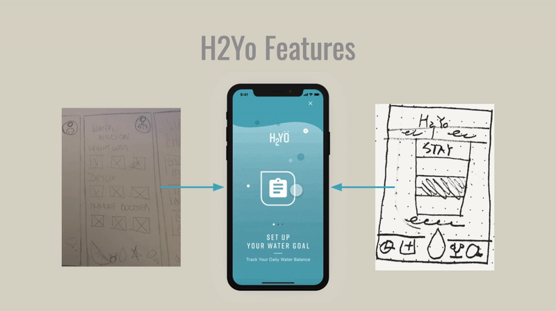
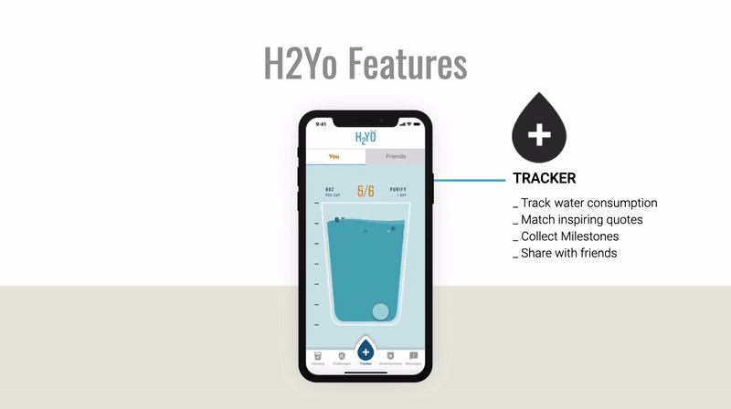

THE PROBLEM:
Getting people to drink more water and educating them on how to make it taste better
THE SOLUTION:
This water tracking application encourages inactive users to drink more water and helps active users to continue
to drink water by learning water infusion recipes and tracking their daily consumption.
H2yO is an application that will increase water consumption and offer healthy additives for
both active and inactive lifestyles to drink more water and enjoy the flavor.
From our research and feedback from interviews and surveys we discovered the following:
Users who don't live active lifestyles don't consume the daily minimum required amount.
Users who are more active would love more information on water infusion recipes.
Users who are trying to consume more water would like reminders during the day to drink water.
I need a smarter way to transition
to a healthier lifestyle.
During the interviews we discovered that users would enjoy learning of new ways to make their water taste better
and remind them to drink.

Introduce challenge of only being able to help users who don't drink much water, we then created another persona that had an active lifestyle in order to make the app cater to both types of users. From that challenge we developed a feature for water infusion recipes and water challenges to get the users to engage with one another.

Once we added a second persona, we were able to establish new features (infused water and
water challenges) to the app to encourage active users to consume more water and help them make their goals.



Our journey with H2yo began with an idea, honestly a complaint from a
friend after doing some web research it grew into a theory which grew stronger from feedback during interviews. We
were able to include both users with active and inactive lifestyles by adding features such a water infusion
recipes and competitions in addition to the tracking.